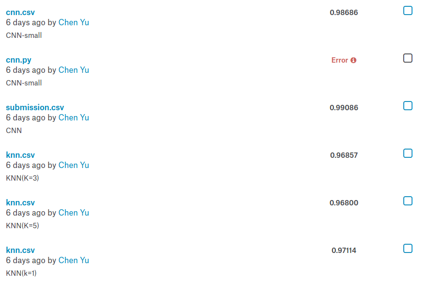
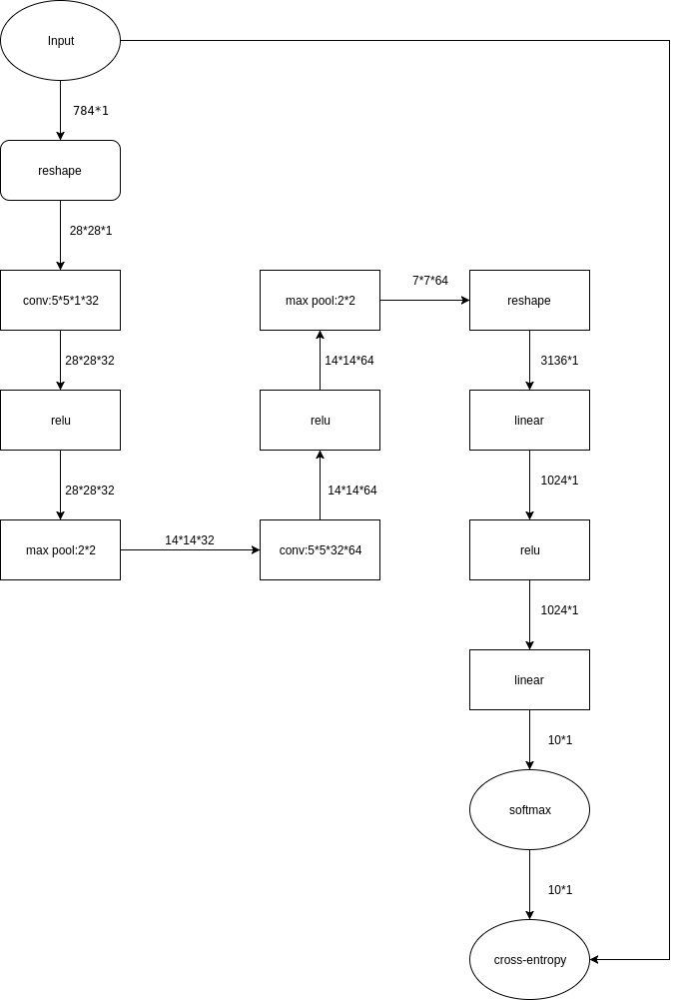
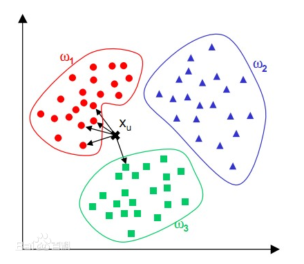

《人工智能导论》实验三实验报告
计54 陈宇 2015011343
实验目的
Digit Recognizer是Kaggle上的一个手写数字识别比赛，要求选手根据网站提供的训练数据进行训练，然后标注出另一部分待检测图片的数字。
本次实验要求学生参与Digit Recognizer比赛，与世界各地的科学家一较高低，并比较不同算法对于手写数字识别的效果差异。
最终提交结果展示

在实验中，我实现了CNN和KNN算法并进行了一些比较，最终CNN的效果最好，正确率达到了 0.99086 ，总提交次数为 6 次。
| 算法 |
正确率 |
备注 |
| CNN | 0.99086 | 训练了一晚上 |
| CNN(small) | 0.98686 | 训练时间较短 |
| KNN(K=1) | 0.97114 | 跑得贼块 |
| KNN(K=5) | 0.96800 | 跑得贼块 |
| KNN(K=3) | 0.96857 | 跑得贼块 |
CNN(卷积神经网络)
由于我们的问题是识别出一张图片上的数字，对于此类问题，CNN(卷积神经网络)的表现非常优秀，故我在实验中使用Tensorflow构造了一个CNN来解决这个问题，该CNN的数据流图如下：

该神经网络是仿照MINST的网络构建的，图片向量先经过reshape变成 28∗28 的大小，然后使用 32 个 5∗5 的卷积核进行卷积，之所以选择 5∗5 大小的卷积核，是考虑到输入图片的大小是 28∗28 ，为了最终得出的模型具有鲁棒性，能够应对图片的一些旋转和平移，所以卷积核应该大一点，但是如果卷积核太大，很可能会导致图片的不同特征被混在了一起，而且卷积核越大，需要训练的参数也越多，在数据集不变的情况下，会导致训练时间增长且最终结果变差（出现过拟合），综上，最终选定的卷积核大小为 5∗5 。
经过一层卷积之后，数据变成了 28∗28∗32 的大小，此时将输入送入一个relu层，relu的算法原理是将每个数据和 0 取 max ，其作用是模拟生物神经元的重激活过程。然后将经过relu的数据送入一个 2∗2 的max pool，其内部原理是对矩阵的每 2∗2 的元素取一个最大值，最终得到的数据大小为 14∗14∗32 。max pool在此处充当一个非线性层，其作用是和之前的卷积层相互作用，使得最终测试的图片即使经过一些旋转和平移，max pool层得出的结果也不会相差太大。
只有一层的卷积是不足够的，所以我在上面的基础上再添加了相同的三层（卷积，relu,max pool）。而为什么没有将两个卷积层直接相连，是由于两个连续的线性层和一个线性层是等价的，所以需要使用非线性层(relu,max pool)将其隔开，同理，第二个线性层也需要和之后的全连接层用非线性层隔开。第二个max pool输出的数据是 7∗7∗64 大小的。
在数据集足够的情况下，还可以添加第三个卷积层，但是受限于本实验中的数据集大小，以及三层卷积需要的训练时间太长，所以我在实验中并没有添加更多的卷积层。
经过了两层卷积层之后，再将数据送入一个全连接层，将数据维度变成 1024 ，此步骤的目的是在前两层卷积的基础上，进一步提取特征，为之后一层做准备。
将上一层全连接的数据再送入一个全连接，将数据唯独变成 10 ，此层的输出就是最终的输出的。值得一提的是，前面说过两个相邻的线性层和一个线性层的作用是等价的，但是我在此处为什么放置两个相邻的全连接层的？实际上在计算中，这两个全连接层和一个全连接层的效果确实是等价的，但是我在实验中，在第一个全连接层出添加了一个dropout，目的是为了防止出现过拟合的情况，所以在训练中这两层全连接并不等同于一个全连接。
最后，使用softmax进行归一化，得到的 10 维向量就是最终每个数字的概率。
在实验中，我使用“交叉熵”（cross-entropy）作为损失函数，其表达式如下：
其中， y 是我们预测的概率分布, y′ 是实际的分布。
在训练中，我将数据集分成两份，一份是训练集，占总数据集的 ParseError: KaTeX parse error: Expected 'EOF', got '%' at position 3: 90%̲ ，另一份是测试集，占总数据集的 ParseError: KaTeX parse error: Expected 'EOF', got '%' at position 3: 10%̲ 。每次迭代放入 200 条数据，迭代了 100000 次，由于使用CPU进行训练太慢，所以我在电脑在晚上训练，第二天早上查看训练结果，由于没有计时，所以并不知道确切的时间，最终测试正确率为0.99086。
此外，我在这种模型的基础上做了一些小修改，训练了一个参数量略小的CNN，但是由于CPU训练太慢，导致并没有训练足够的时间，最终测试结果正确率为 0.98686 ，猜测如果给足训练时间应该和上面的模型正确率差不太多。
KNN(k-Nearest Neighbor)
KNN算法也叫K临近，是数据挖掘领域最简单的算法之一，其算法原理可以用如下图片描述：

在本实验中，将每张图片看作一个 784 维空间中的一个点。对于一个需要计算的图片向量，计算空间中离它最近的 k 个点，然后统计这 k 个点分别的属性，取出现次数最多的数字作为需要计算图片的数字。
我首先测试了 k=1 的情况，也就是待计算图片的数字取欧式空间中离它最近点的数字。虽然算法非常简单，但是测试结果异常的好，达到了 0.97114 。
然后我继续测试了 k=5 和 k=3 的情况，但是测试结果分别是 0.96800 和 0.96857 ，不仅没有超过 k=1 的情况，最终效果反而变差了。
实验总结
从试验结果来看，CNN在图片相关的领域确实如其传闻那样表现优秀，只要有足够的数据量和计算能力，CNN的力量应该是非常强大的。
同时，传统算法在某些时候的表现依然不错，比如KNN能够取得 0.97114 的成绩确实出乎我的意料，然而KNN算法存在瓶颈，它并不能永远在数据量增大的情况下效果变好，很多时候反而会变差，这也是其相比于CNN不足的地方。
参考文献